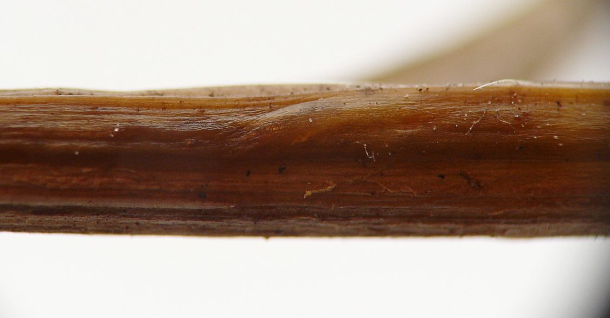
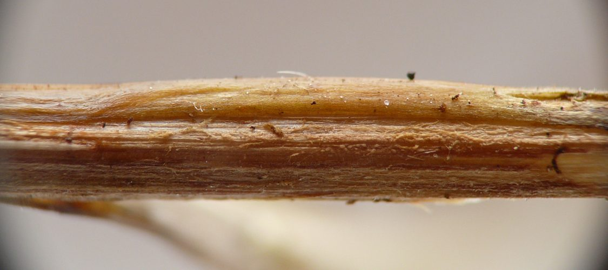
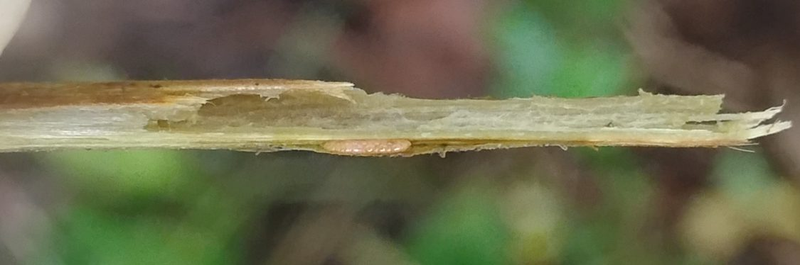
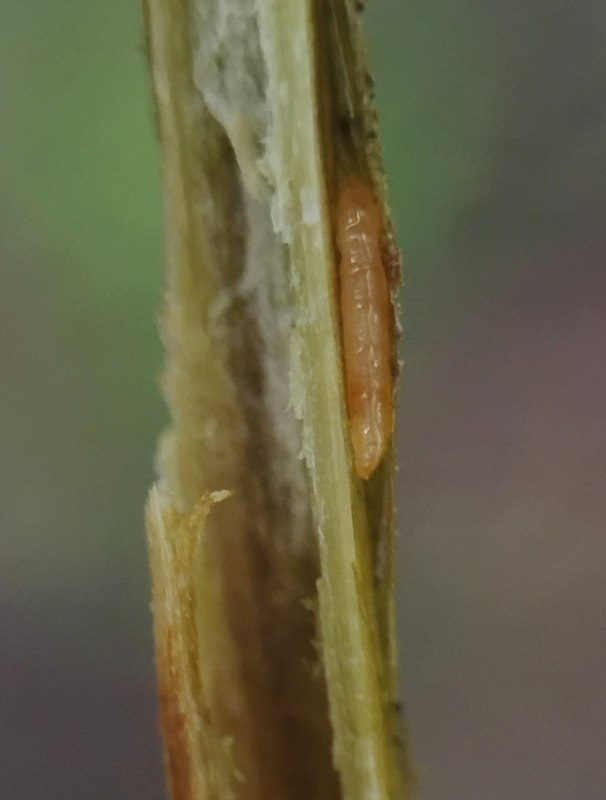
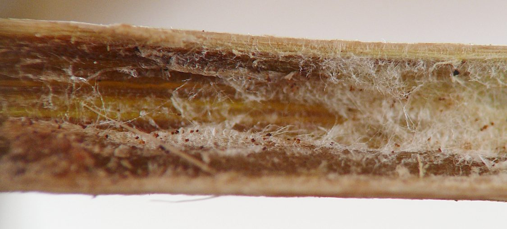
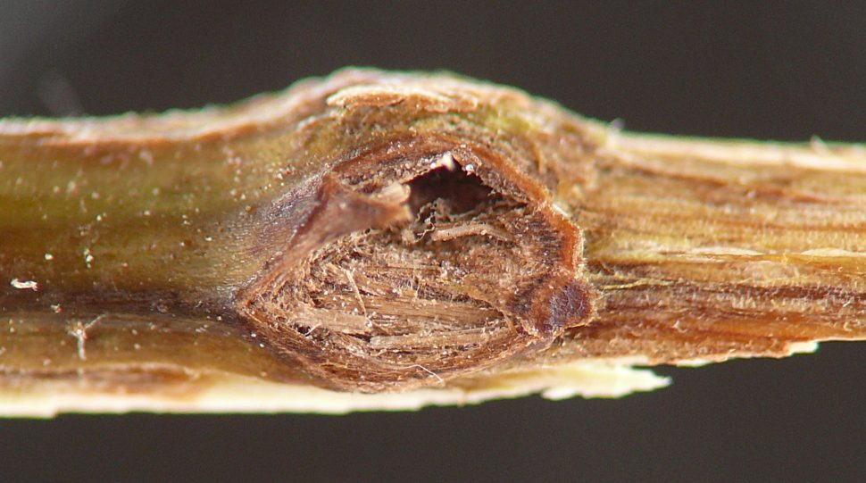
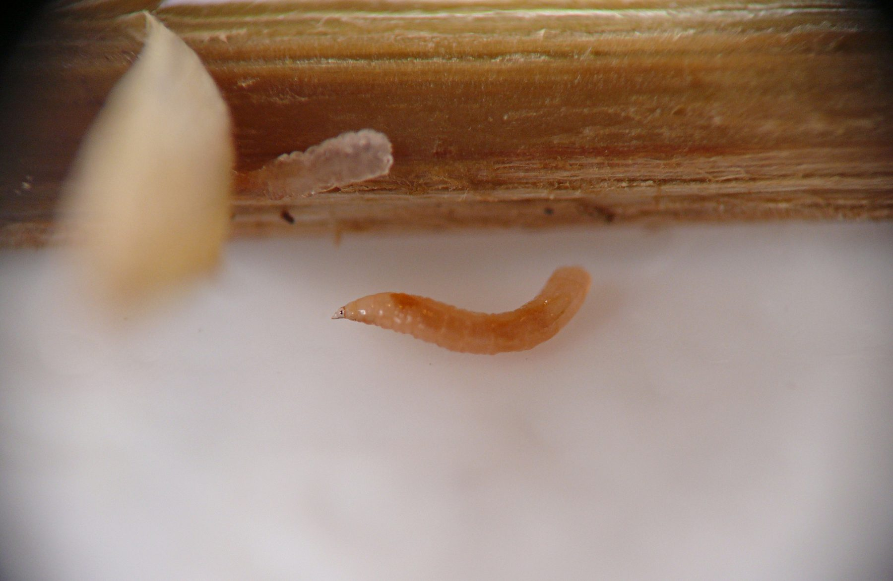
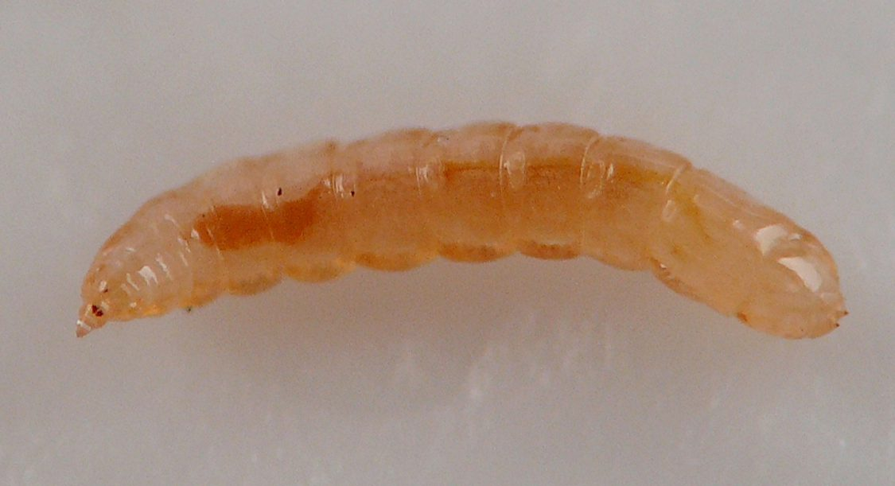
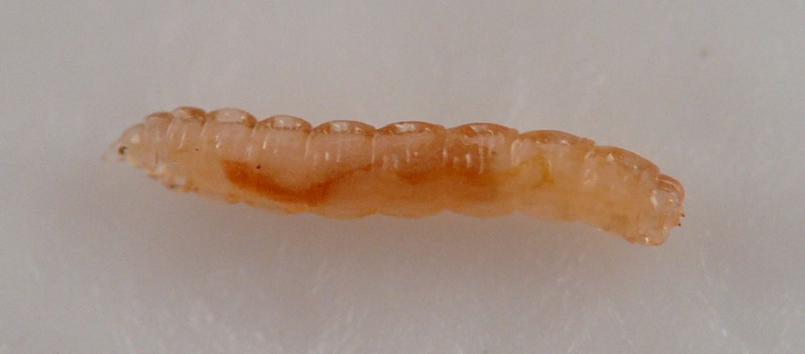
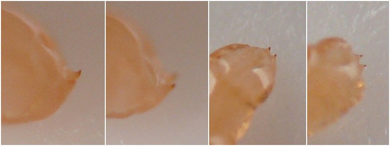

Local feeder (Diptera: Cecidomyiidae) in stems of Polymnia
| Record no.: | 0814 |
|---|---|
| Feeding guild: | Local feeder in stem |
| Taxonomy: | Diptera: Cecidomyiidae: cf. Resseliella sp. |
| Stages observed: | trace, larva |
| Distribution observed: | IA |
| Hosts in Polymnia: | P. canadensis (leaf-cup) |
In mid-September 2026, I observed several of these larvae in a stem of the host. The plant had lodged and the stem showed brownish discoloration, which caused me to look closer. At least three larvae were present just under the epidermis of the stem near the point where it had lodged. One of these was evidently ready to leave the plant at the time I opened the stem, as it promptly began curling its body into a taut C-shape and attempting to vault off the plant, similar to what Resseliella larvae on white snakeroot may sometimes do when they are ready to move to the ground in preparation for pupation (record 0032). Another larva could be seen adjusting its position under the epidermis, which bulged slightly due the thickness of the larva's body (see photos). The pithy interior of the stem in the vicinity of the larvae contained whitish fungal hyphae, but it was unclear if these were directly connected to the presence of the larvae. In addition to the discoloration, the stem exterior near the larvae's location exhibited a hole surrounded by dry, brown scar tissue. The scarred hole opened into a cavity in the subepidermal space but not all the way through to the pith in the stem interior. I watched a Resseliella larva apparently emerge from a similar hole on a white snakeroot stem in 2025.
The paired projections on the posterior ends of the Polymnia larvae were reminiscent of the "recurved lobes on the terminal segment" reported for the genus Resseliella on p. 42 and shown on plate 11 in Gagné (2026), and this, along with similarities in overall larval appearance and microhabitat with the confirmed Resseliella from white snakeroot (record 0032), led me to this genus as a tentative identification.

 Prev
Prev



















- Gagné, R.J. 2026. The plant-feeding gall midges of North America (2nd edition). https://doi.org/10.5281/zenodo.21376229[return to in-text citation]
Page created: September 28, 2026. Last update: none